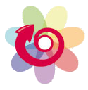

Faciliter les transitions avec des usages numériques adaptés
Créer une coopérative (SCIC) de services numériques
Être moteur des convergences
L'interdépendance entre l'humain, la technologie et le vivant est complexe. Les impactes mutuelles sont mesurées et les transitions nécessaires émergent à l'aube d'une société plus responsable et inclusive où l'on arrive à établir un équilibre intelligent au coeur du vivant.
Convergences 22, se donne comme principe directeur de faciliter les transitions vers une « culture du faire ensemble » soutenable sur le long terme.
Une culture permanente soutenant les cycles vertueux que l’on retrouve dans l’éthique de la permaculture.

La responsabilité étant autant individuelle que collective, l'engagement citoyen est nécessaire, dans la vie quotidienne, personnelle ou professionnelle.
Au coeur de l'économie sociale et solidaire, la vie associative est une force du territoire, un espace d’engagement citoyen, un vecteur de développement durable et de cohésion sociale.
Création d'une Coopérative de Services numériques
Dans l'idée de pouvoir répondre localement aux besoins du numérique à l'échelle du département, une idée fait son chemin depuis plusieurs années parmi les différents acteurs du territoire (collègues de la médiation numérique, agglomération de Saint-Brieuc, département,...) de créer une coopérative de services numériques.
Le numérique est une compétence transversale, qui n'est pas portée et structurée sur le territoire.
Une structuration permettrait d'apporter des réponses collectives aux besoins avec (entre autre ...):
- une filière de recyclage
- une offre de formation du public / du personnel des structures / des élus ...
- d'apporter des blocs numériques dans les DLA
- des services mutualisés numériques responsables pour les associations ou communes (hébergements, outils de travail collaboratifs, ...)
- des propositions d'animations : ateliers, événements
Le premier pas préalable pourrait être la création d'une association de préfiguration d'une SCIC. Le projet serait d'associer au sein de l'association les différents acteurs qui se sentent concernés pour aboutir à une feuille de route pour la création de la SCIC.
 Vers une SCIC - Présentation courte"
Vers une SCIC - Présentation courte"
publié le 27/10/2022
Développement d'un outil numérique :
« le moteur de convergences » une boîte à outils mutualisée.
En facilitant la communication et l’organisation des acteurs locaux cela permettra d'augmenter leur visibilité et leur capacité dans leurs champs d’action.
Cette boîte à outil s'appuie sur un modéle d'information calqué sur l'échange et la perception réelle d'informations entre personnes.
Convergence 22 a pour ambition à travers « le moteur de convergences » de créer une couche réelle du web, un web résilient, l'ère d'un web favorisant le lien social, culturel et environnemental dans une économie circulaire.
L'outil numérique "moteur de convergences"
publié le 29/05/2020
- le web r.∞ - 😃